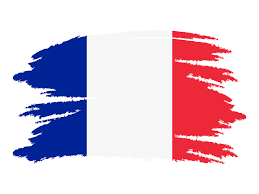
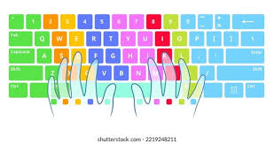

Foreign language
Since English is regarded as a necessary language in many African nations, it was the first foreign language I learnt. It is the language I am most fluent in, though I am still working toward mastery.

In my early school years, French became my second foreign language. At first, I didn't realize how important learning a second language was. But I went on to study French in high school and received an A1 certification.
I learned Arabic by accident, mostly as a result of my childhood fascination with Arabic cartoon films. I hope to become proficient in it in the future.
Relevant skill

Typing Using a variety of internet resources, I have improved my typing abilities. My accuracy and efficiency when working on digital activities have increased as a result of this.
Communication Both personal and professional contexts require effective communication. In order to promote stronger bonds and teamwork, I'm always trying to get better at this ability.